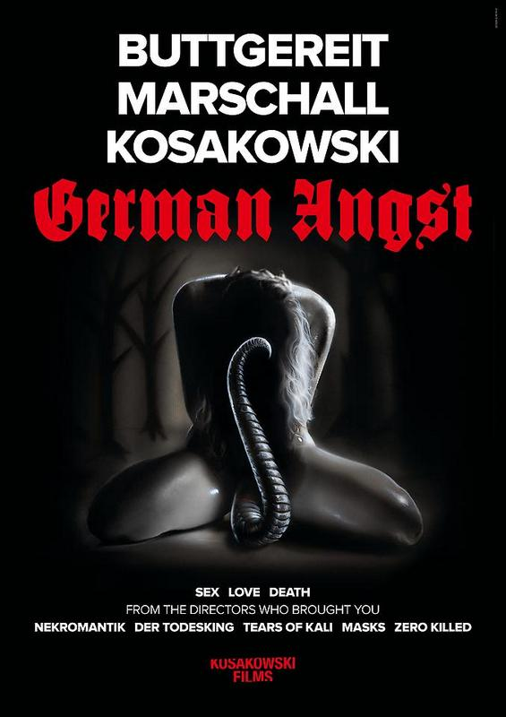

German Angst (© Pierrot Le Foubr)
Termin: 07.05.2015
Genre: Horror, Action, Episodenfilm
Nationalität: D
Homepage: http://www.german-angst.com/
Die Heldin aus Final Girl (Lola Gave) betritt mit einer Gartenschere bewaffnet das Schlafzimmer ihres Vaters (Axel Holst). Keine positiven Beweggründe treiben sie an. Make a Wish erzählt von den taubstummen Freunden Kasia (Annika Strauss) und Jacek (Matthan Harris), die von einer Bande Skinheads überfallen werden. Kasia setzt auf einen Talisman. Der soll einen Körpertausch von Jacek und dem Skinhead-Anführer bewirken. In der Episode Alraune fällt dem Berliner Fotograf Eden (Milton Welsh) die schöne Kira (Kristina Kostiv) in einem Club auf. Er folgt ihr, als diese die Party verlässt, nicht ahnend, vor welch eine seltsame Wahl er gestellt werden wird.